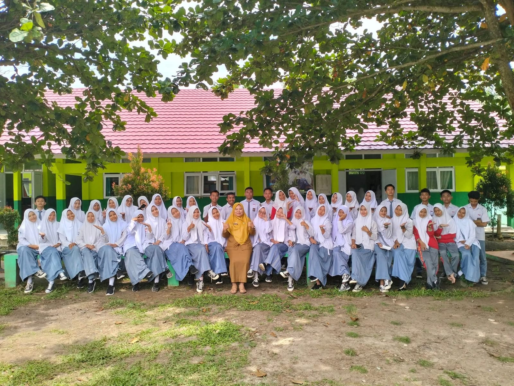
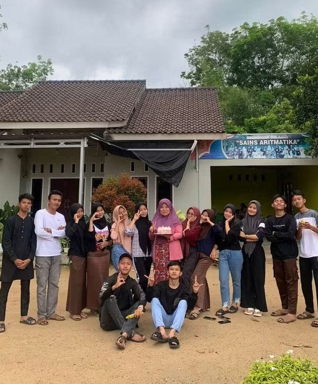
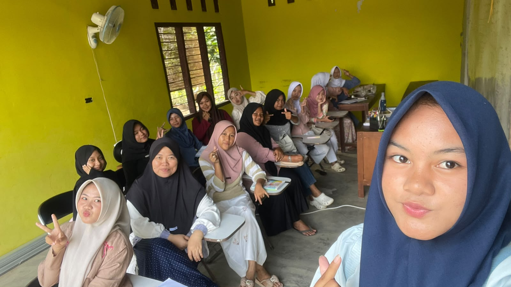
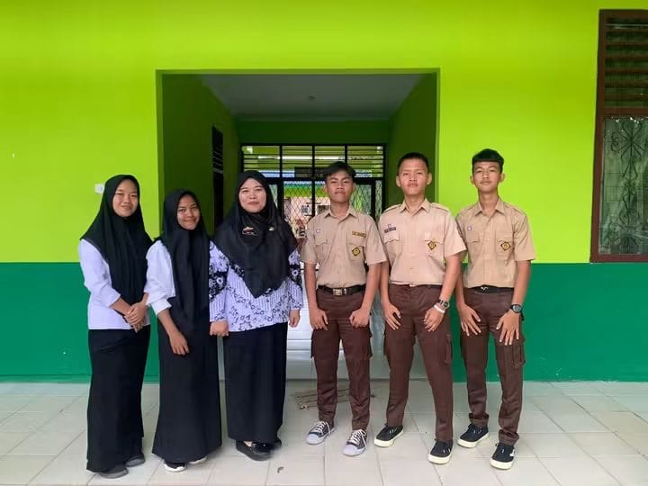
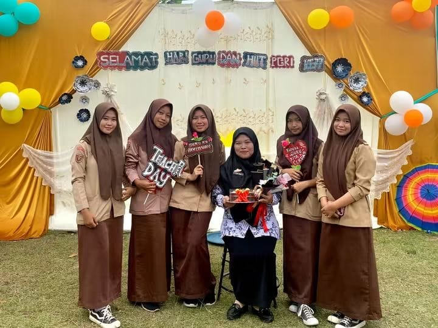
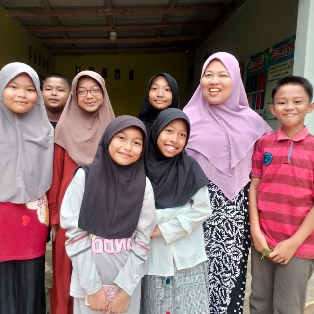
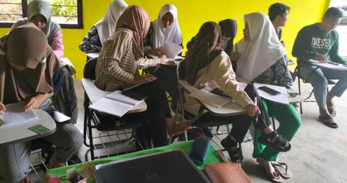
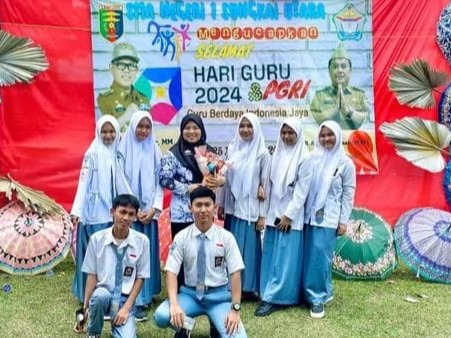

Kelas SD
Menguatkan dasar berhitung, memahami operasi bilangan, dan membangun kebiasaan menyelesaikan soal dengan teliti.
Lihat paket →Belajar matematika jadi lebih terarah dengan penjelasan konsep yang mudah dipahami, latihan soal bertahap, dan pendampingan sesuai kebutuhan setiap siswa.


Bimbel Sains Aritmatika berawal dari keinginan Ibu Lydia untuk membantu siswa memahami matematika melalui metode belajar yang menarik dan menyenangkan.
Sebagai pendiri sekaligus pengelola, beliau terlibat langsung dalam mengajar matematika, membantu siswa memahami konsep dan langkah penyelesaian soal, serta menjalin komunikasi terbuka dengan orang tua.
- Lydia Putri, S.Si., M.M.

Bimbel Sains Aritmatika hadir sebagai ruang belajar yang mendampingi siswa memahami konsep matematika, menyusun langkah penyelesaian, dan berani mencoba berbagai jenis soal.
Kami mengutamakan suasana belajar yang hangat, penjelasan matematika secara bertahap, dan latihan yang disesuaikan dengan kebutuhan serta kemampuan setiap siswa.
Bimbel Sains Aritmatika berdiri dengan tujuan membantu anak-anak memahami matematika dengan lebih baik.
Pendampingan matematika tersedia untuk jenjang SD, SMP, dan SMA dalam pilihan kelas reguler maupun private.
Kami terus menjaga suasana belajar yang hangat dan komunikasi yang terbuka dengan orang tua.
Kami tidak ingin siswa sekadar menghafal rumus. Kami mendampingi mereka memahami konsep, mengetahui alasan di balik setiap langkah, dan berani mencoba menyelesaikan soal.

- Lydia Putri, S.Si., M.M.
Belajar konsep, membahas soal, dan berlatih matematika sesuai materi sekolah serta jenjang siswa.
Menguatkan dasar berhitung, memahami operasi bilangan, dan membangun kebiasaan menyelesaikan soal dengan teliti.
Lihat paket →Memahami konsep aljabar dan geometri, berlatih soal, serta menyiapkan strategi untuk tugas dan ujian matematika.
Lihat paket →Membahas konsep dan soal matematika SMA secara terarah untuk membantu siswa lebih siap menghadapi evaluasi belajar.
Lihat paket →Pilih jenjang dan jenis kelas untuk melihat biaya bimbingan matematika. Kelas reguler berlangsung dua kali per minggu.
Harga kelas reguler berlaku per bulan. Hubungi kami via WhatsApp untuk informasi pendaftaran.
Kumpulan momen dan dokumentasi siswa yang pernah menjadi bagian dari perjalanan belajar di Sains Aritmatika. Setiap foto menyimpan cerita, semangat, dan pengalaman dalam proses tumbuh dan meraih prestasi.





Tanyakan program matematika, jadwal belajar, atau pendaftaran melalui informasi kontak berikut.